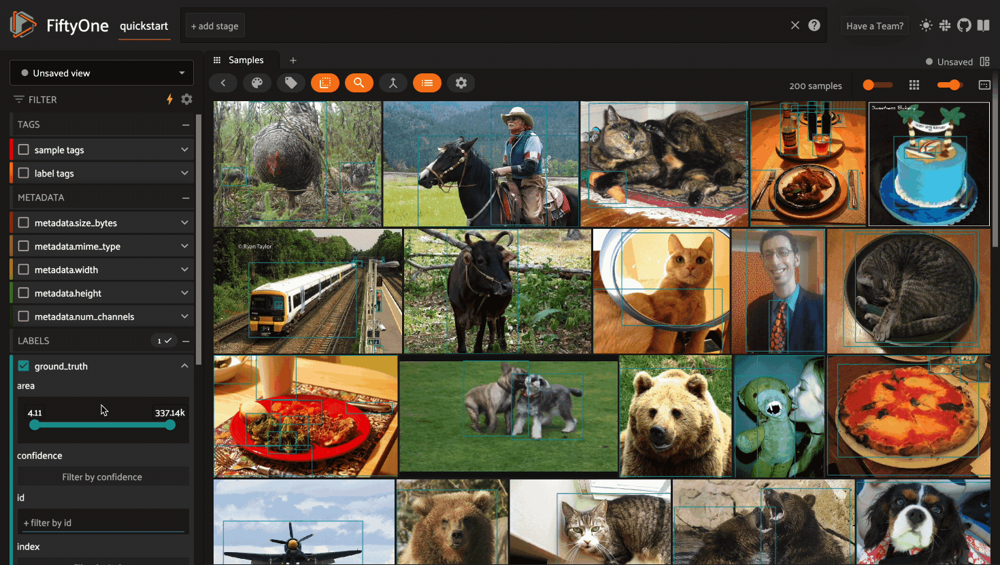
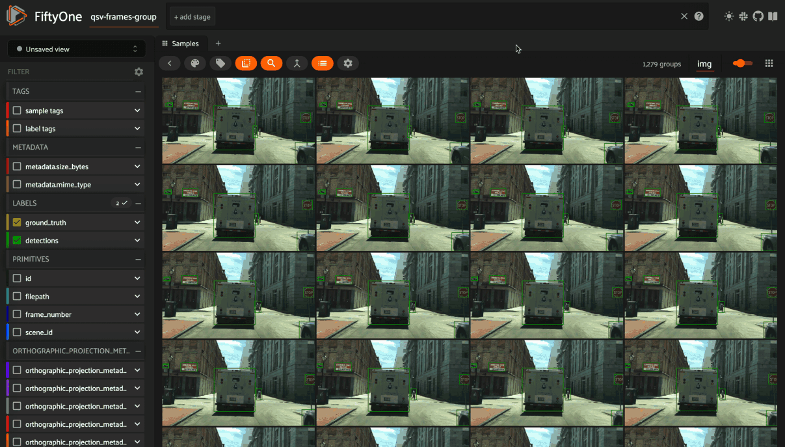
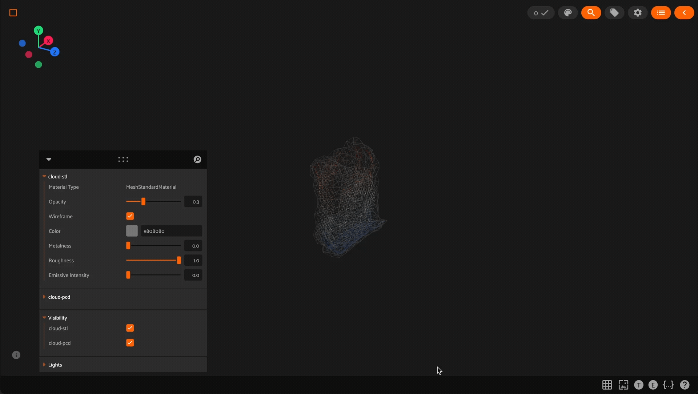
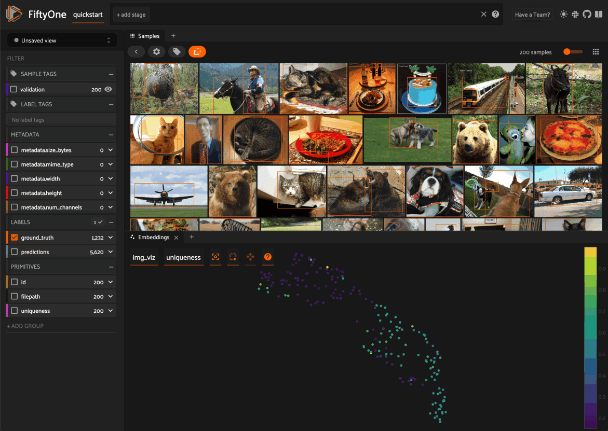
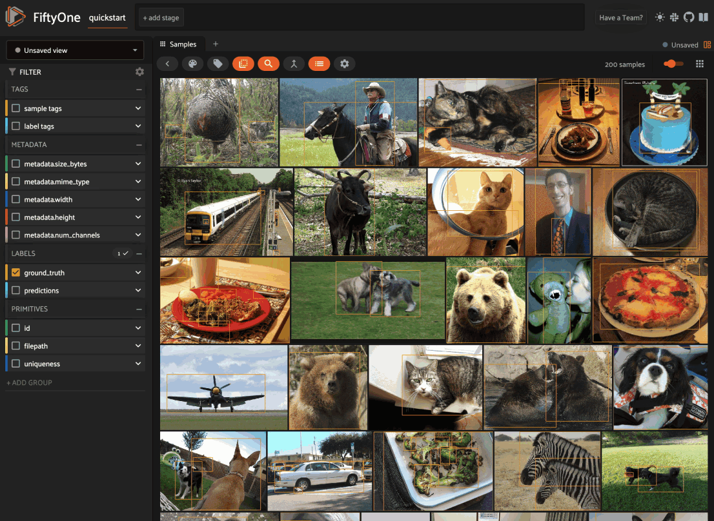
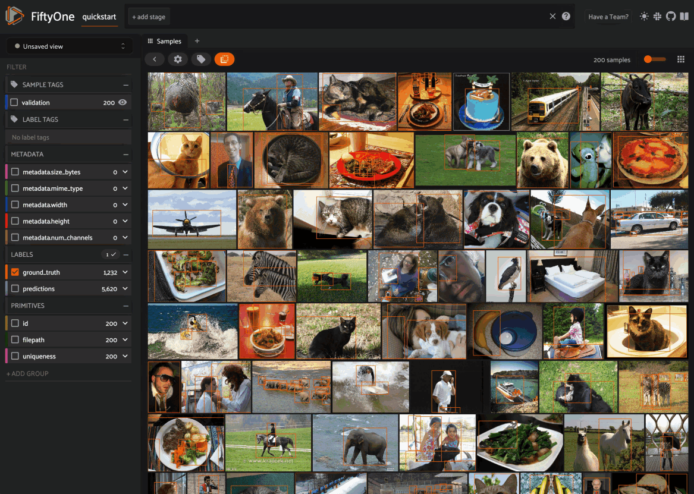
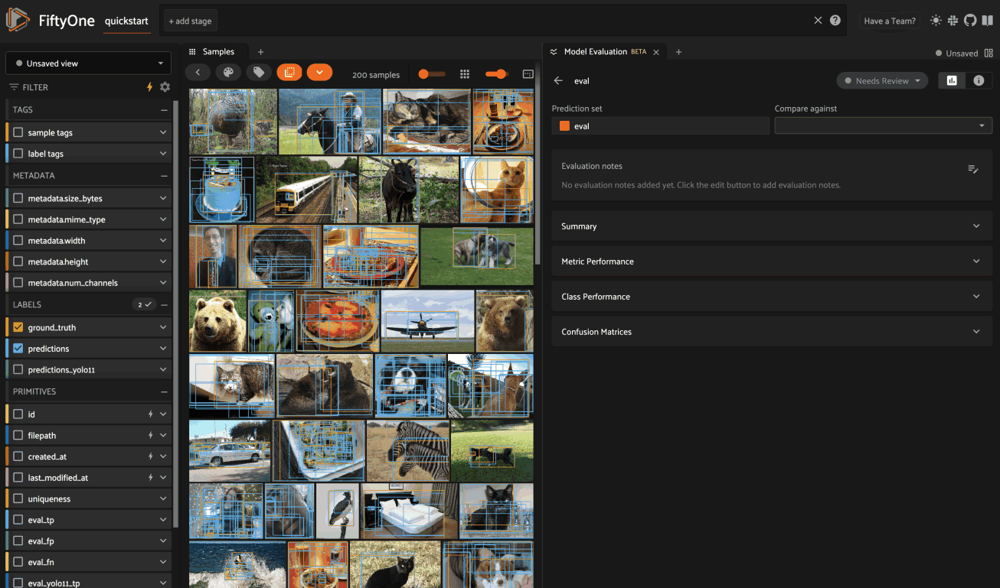
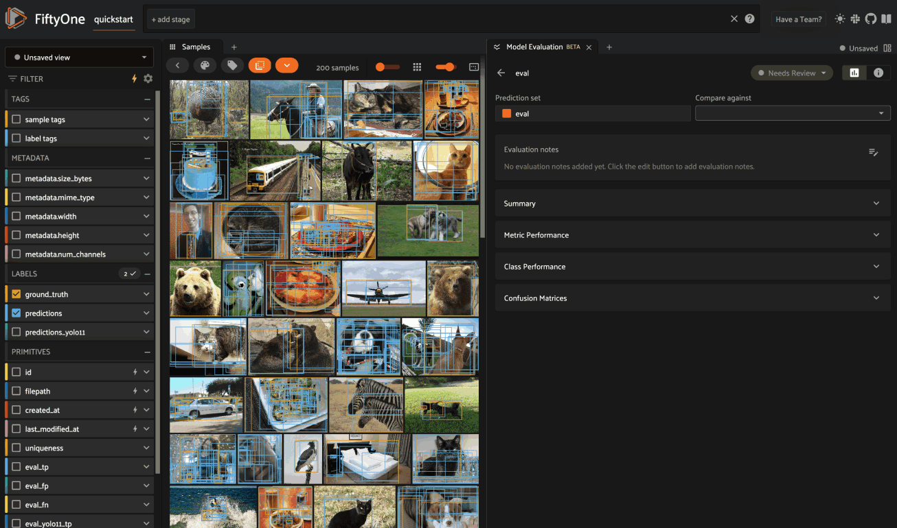
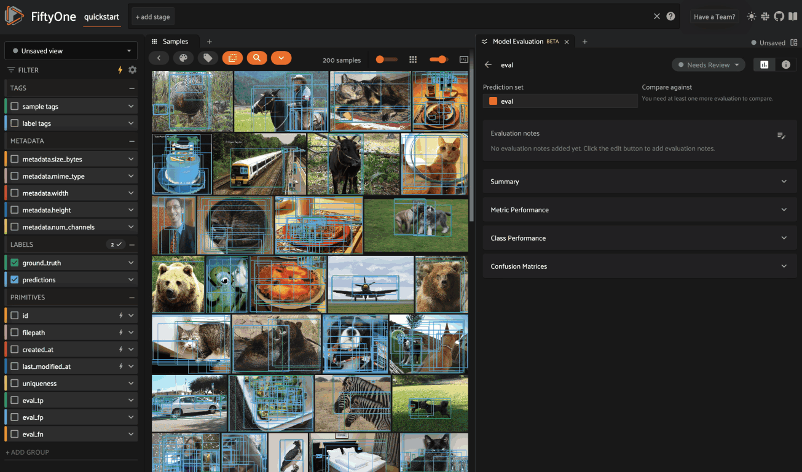

Using the FiftyOne App¶
The FiftyOne App is a powerful graphical user interface that enables you to visualize, browse, and interact directly with your datasets.

Note
Did you know? You can use FiftyOne’s plugin framework to customize and extend the behavior of the App!
App environments¶
The FiftyOne App can be used in any environment that you’re working in, from a local IPython shell, to a remote machine or cloud instance, to a Jupyter or Colab notebook. Check out the environments guide for best practices when working in each environment.
Sessions¶
The basic FiftyOne workflow is to open a Python shell and load a Dataset.
From there you can launch the FiftyOne App and interact with it
programmatically via a session.
Creating a session¶
You can launch an instance of the App by calling
launch_app(). This method returns a
Session instance, which you can subsequently use to interact programmatically
with the App!
1 2 3 | import fiftyone as fo session = fo.launch_app() |

App sessions are highly flexible. For example, you can launch launch multiple App instances and connect multiple App instances to the same dataset.
By default, when you’re working in a non-notebook context, the App will be opened in a new tab of your web browser. See this FAQ for supported browsers.
Note
fo.launch_app() will launch the
App asynchronously and return control to your Python process. The App will
then remain connected until the process exits.
Therefore, if you are using the App in a script, you should use
session.wait() to block
execution until you close it manually:
# Launch the App
session = fo.launch_app(...)
# (Perform any additional operations here)
# Blocks execution until the App is closed
session.wait()
# Or block execution indefinitely with a negative wait value
# session.wait(-1)
Note
When working inside a Docker container, FiftyOne should automatically
detect and appropriately configure networking. However, if you are unable
to load the App in your browser, you many need to manually
set the App address to 0.0.0.0:
session = fo.launch_app(..., address="0.0.0.0")
See this page for more information about working with FiftyOne inside Docker.
Note
If you are a Windows user launching the App from a script, you should use the pattern below to avoid multiprocessing issues, since the App is served via a separate process:
import fiftyone as fo
dataset = fo.load_dataset(...)
if __name__ == "__main__":
# Ensures that the App processes are safely launched on Windows
session = fo.launch_app(dataset)
session.wait()
Updating a session’s dataset¶
Sessions can be updated to show a new Dataset by updating the
Session.dataset property of the
session object:
1 2 3 4 5 6 | import fiftyone.zoo as foz dataset = foz.load_zoo_dataset("cifar10") # View the dataset in the App session.dataset = dataset |

Updating a session’s view¶
You can also show a specific view into the current dataset
in the App by setting the
Session.view property of the
session.
For example, the command below loads a DatasetView in the App that shows the
first 10 samples in the dataset sorted by their uniqueness field:
1 | session.view = dataset.sort_by("uniqueness").limit(10) |
Loading a sample or group¶
You can immediately load a specific sample
in the modal when launching a new Session by
providing its ID via the sample_id parameter:
1 2 3 4 5 6 7 | import fiftyone as fo import fiftyone.zoo as foz dataset = foz.load_zoo_dataset("quickstart") sample_id = dataset.last().id session = fo.launch_app(dataset, sample_id=sample_id) |
You can also programmatically load a sample in the modal on an existing session
by setting its
session.sample_id property:
1 2 3 | sample_id = dataset.take(1).first().id session.sample_id = sample_id |
Note
Did you know? You can link directly to a sample by copy + pasting the App’s URL into your browser search bar!
Similarly, for group datasets, you can immediately load a
specific group in the modal when launching a new Session by providing its ID
via the group_id parameter:
1 2 3 4 5 6 7 | import fiftyone as fo import fiftyone.zoo as foz dataset = foz.load_zoo_dataset("quickstart-groups") group_id = dataset.last().group.id session = fo.launch_app(dataset, group_id=group_id) |
You can also programmatically load a group in the modal on an existing session
by setting its
session.group_id property:
1 2 3 | group_id = dataset.take(1).first().group.id session.group_id = group_id |
Note
Did you know? You can link directly to a group by copy + pasting the App’s URL into your browser search bar!
Remote sessions¶
If your data is stored on a remote machine, you can forward a session from the remote machine to your local machine and seamlessly browse your remote dataset from you web browser.
Check out the environments page for more information on possible configurations of local/remote/cloud data and App access.
Remote machine¶
On the remote machine, you can load a Dataset and launch a remote session
using either the Python library or the CLI.
Local machine¶
On the local machine, you can access an App instance connected to the remote session by either manually configuring port forwarding or via the FiftyOne CLI:
Note
Remote sessions are highly flexible. For example, you can connect to multiple remote sessions and run multiple remote sessions from one machine.
Using the sidebar¶
Any labels, tags, and scalar fields can be overlaid on the samples in the App by toggling the corresponding display options in the App’s sidebar:

If you have stored metadata on your fields, then you can view this information in the App by hovering over field or attribute names in the App’s sidebar:
Filtering sample fields¶
The App provides UI elements in both grid view and expanded sample view that you can use to filter your dataset. To view the available filter options for a field, click the caret icon to the right of the field’s name.
Whenever you modify a filter element, the App will automatically update to show only those samples and/or labels that match the filter.
Note
Did you know? When you declare custom attributes on your dataset’s schema, they will automatically become filterable in the App!
Note
Did you know? When you have applied filter(s) in the App, a bookmark icon appears in the top-left corner of the sample grid. Click this button to convert your filters to an equivalent set of stage(s) in the view bar!
Optimizing Query Performance¶
The App’s sidebar is optimized to leverage database indexes whenever possible.
Fields that are indexed are indicated by lightning bolt icons next to their field/attribute names:
The above GIF shows query performance in action on the train split of the
BDD100K dataset with an index on the
detections.detections.label field:
1 2 3 4 5 6 7 8 9 10 11 12 13 14 15 | import fiftyone as fo import fiftyone.zoo as foz # The path to the source files that you manually downloaded source_dir = "/path/to/dir-with-bdd100k-files" dataset = foz.load_zoo_dataset( "bdd100k", split="train", source_dir=source_dir, ) dataset.create_index("detections.detections.label") session = fo.launch_app(dataset) |
Note
When filtering by multiple fields, queries will be more efficient when your first filter is on an indexed field.
The SDK provides a number of useful utilities for managing indexes on your datasets:
list_indexes()- list all existing indexescreate_index()- create a new indexdrop_index()- drop an existing indexget_index_information()- get information about the existing indexes
Note
Did you know? With FiftyOne Teams you can manage indexes natively in the App via the Query Performance panel.
In general, we recommend indexing only the specific fields that you wish to perform initial filters on:
1 2 3 4 5 6 7 8 9 10 11 12 13 14 15 16 17 18 | import fiftyone as fo dataset = fo.Dataset() # Index specific top-level fields dataset.create_index("camera_id") dataset.create_index("recorded_at") dataset.create_index("annotated_at") dataset.create_index("annotated_by") # Index specific embedded document fields dataset.create_index("ground_truth.detections.label") dataset.create_index("ground_truth.detections.confidence") # Note: it is faster to declare indexes before adding samples dataset.add_samples(...) session = fo.launch_app(dataset) |
Note
Filtering by frame fields of video datasets is not directly optimizable by creating indexes. Instead, use summary fields to efficiently query frame-level information on large video datasets.
Frame filtering in the App’s grid view can be disabled by setting
disable_frame_filtering=True in your
App config.
For grouped datasets, you should create two indexes for each field you wish to filter by: the field itself and a compound index that includes the group slice name:
1 2 3 4 5 6 7 8 9 10 | import fiftyone as fo import fiftyone.zoo as foz dataset = foz.load_zoo_dataset("quickstart-groups") # Index a specific field dataset.create_index("ground_truth.detections.label") dataset.create_index([("group.name", 1), ("ground_truth.detections.label", 1)]) session = fo.launch_app(dataset) |
For datasets with a small number of fields, you can index all fields by adding a single global wildcard index:
1 2 3 4 5 6 7 | import fiftyone as fo import fiftyone.zoo as foz dataset = foz.load_zoo_dataset("quickstart") dataset.create_index("$**") session = fo.launch_app(dataset) |
Warning
For large datasets with many fields, global wildcard indexes may require a substantial amount of RAM and query performance may be degraded compared to selectively indexing a smaller number of fields.
You can also wildcard index all attributes of a specific embedded document field:
1 2 | # Wildcard index for all attributes of ground truth detections dataset.create_index("ground_truth.detections.$**") |
Note
Numeric field filters are not supported by wildcard indexes.
Disabling Query Performance¶
Query Performance is enabled by default for all datasets. This is generally the recommended setting for all large datasets to ensure that queries are performant.
However, in certain circumstances you may prefer to disable Query Performance, which enables the App’s sidebar to show additional information such as label/value counts that are useful but more expensive to compute.
You can disable Query Performance for a particular dataset for its lifetime (in your current browser) via the gear icon in the Samples panel’s actions row:

You can also disable Query Performance by default for all datasets by setting
default_query_performance=False in your
App config.
Sidebar groups¶
You can customize the layout of the App’s sidebar by creating/renaming/deleting groups and dragging fields between groups directly in the App:
1 2 3 4 5 | import fiftyone as fo import fiftyone.zoo as foz dataset = foz.load_zoo_dataset("quickstart") session = fo.launch_app(dataset) |

Note
Any changes you make to a dataset’s sidebar groups in the App are saved on the dataset and will persist between sessions.
You can also programmatically modify a dataset’s sidebar groups by editing the
sidebar_groups property
of the dataset’s App config:
1 2 3 4 5 6 7 8 9 10 11 12 13 14 15 | # Get the default sidebar groups for the dataset sidebar_groups = fo.DatasetAppConfig.default_sidebar_groups(dataset) # Collapse the `metadata` section by default print(sidebar_groups[2].name) # metadata sidebar_groups[2].expanded = False # Add a new group sidebar_groups.append(fo.SidebarGroupDocument(name="new")) # Modify the dataset's App config dataset.app_config.sidebar_groups = sidebar_groups dataset.save() # must save after edits session = fo.launch_app(dataset) |
You can conveniently reset the sidebar groups to their default state by setting
sidebar_groups to None:
1 2 3 4 5 | # Reset sidebar groups dataset.app_config.sidebar_groups = None dataset.save() # must save after edits session = fo.launch_app(dataset) |
Note
If a dataset has fields that do not appear in the dataset’s
sidebar_groups
property, these fields will be dynamically assigned to default groups in
the App at runtime.
Using the view bar¶
The view bar makes all of the powerful searching, sorting, and filtering operations provided by dataset views available directly in the App.
Note
Any changes to the current view that you make in the view bar are
automatically reflected in the DatasetView exposed by the
Session.view property of the
App’s session object.

Grouping samples¶
You can use the group action in the App’s menu to dynamically group your samples by a field of your choice:

In this mode, the App’s grid shows the first sample from each group, and you can click on a sample to view all elements of the group in the modal.
You may navigate through the elements of the group either sequentially using the carousel, or randomly using the pagination UI at the bottom of the modal.
When viewing ordered groups, you have an additional option to render the elements of the group as a video.

Field visibility¶
You can configure which fields of your dataset appear in the App’s sidebar by clicking the settings icon in the upper right of the sidebar to open the Field visibility modal.
Consider the following example:
1 2 3 4 5 6 7 8 9 10 11 12 13 14 15 16 17 18 | import fiftyone as fo import fiftyone.zoo as foz from datetime import datetime dataset = foz.load_zoo_dataset("quickstart") dataset.add_dynamic_sample_fields() field = dataset.get_field("ground_truth") field.description = "Ground truth annotations" field.info = {"creator": "alice", "created_at": datetime.utcnow()} field.save() field = dataset.get_field("predictions") field.description = "YOLOv8 predictions" field.info = {"owner": "bob", "created_at": datetime.utcnow()} field.save() session = fo.launch_app(dataset) |
Manual selection¶
You can use the Selection tab to manually select which fields to display.
By default, only top-level fields are available for selection, but if you want
fine-grained control you can opt to include nested fields
(eg dynamic attributes of your label fields) in the
selection list as well.
Note
You cannot exclude default fields/attributes from your dataset’s schema, so these rows are always disabled in the Field visibility UI.
Click Apply to reload the App with only the specified fields in the sidebar.
When you do so, a filter icon will appear to the left of the settings icon in
the sidebar indicating how many fields are currently excluded. You can reset
your selection by clicking this icon or reopening the modal and pressing the
Reset button at the bottom.
Note
If your dataset has many fields and you frequently work with different subsets of them, you can persist/reload field selections by saving views.
Filter rules¶
Alternatively, you can use the Filter rule tab to define a rule that is
dynamically applied to the dataset’s
field metadata each time the App loads to
determine which fields to include in the sidebar.
Note
Filter rules are dynamic. If you save a view that contains a filter rule, the matching fields may increase or decrease over time as you modify the dataset’s schema.
Filter rules provide a simple syntax with different options for matching fields:
Note
All filter rules are implemented as substring matches against the stringified contents of the relevant field metadata.
Color schemes¶
You can configure the color scheme used by the App to render content by clicking on the color palette icon above the sample grid.
Consider the following example:
1 2 3 4 5 6 7 8 9 | import fiftyone as fo import fiftyone.zoo as foz dataset = foz.load_zoo_dataset("quickstart") dataset.evaluate_detections( "predictions", gt_field="ground_truth", eval_key="eval" ) session = fo.launch_app(dataset) |
Color schemes in the App¶
The GIF below demonstrates how to:
Configure a custom color pool from which to draw colors for otherwise unspecified fields/values
Configure the colors assigned to specific fields in color by
fieldmodeConfigure the colors used to render specific annotations based on their attributes in color by
valuemodeSave the customized color scheme as the default for the dataset

Note
Any customizations you make only apply to the current dataset. Each time you load a new dataset, the color scheme will revert to that dataset’s default color scheme (if any) or else the global default color scheme.
To persist a color scheme, you can press Save as default to save the
color scheme as the dataset’s default scheme, copy it via the modal’s JSON
viewer, or access it programmatically via
session.color_scheme
as described below.
The following table describes the available color scheme customization options in detail:
Tab |
Element |
Description |
|---|---|---|
Global settings |
Color annotations by |
Whether to color the annotations in the grid/modal based on
the |
Global settings |
Color pool |
A pool of colors from which colors are randomly assigned for otherwise unspecified fields/values |
Global settings |
Label Opacity |
Color opacity of annotations |
Global settings |
Multicolor keypoints |
Whether to independently coloy keypoint points by their index |
Global settings |
Show keypoints skeletons |
Whether to show keypoint skeletons, if available |
Global settings |
Default mask targets colors |
If the MaskTargetsField is defined with integer keys, the dataset can assign a default color based on the integer keys |
Global settings |
Default colorscale |
The default colorscale to use when rendering heatmaps |
JSON editor |
A JSON representation of the current color scheme that you can directly edit or copy + paste |
|
All |
|
Reset the current color scheme to the dataset’s default (if any) or else the global default scheme |
All |
|
Save the current color scheme as the default for the current dataset. Note that this scheme can be viewed and/or modified in Python |
All |
|
Deletes the current dataset’s default color scheme |
|
Use custom colors for |
Allows you to specify a custom color to use whenever
rendering any content from that field in the grid/modal
when the App is in color by |
|
Use custom colors for specific field values |
Allows you to specify custom colors to use to render
annotations in this field based on the individual values
that it takes. In the case of embedded document fields,you
must also specify an attribute of each object. For example,
color all
|
Color schemes in Python¶
You can also programmatically configure a session’s color scheme by creating
ColorScheme instances in Python:
1 2 3 4 5 6 7 8 9 10 11 12 13 14 15 16 17 18 19 20 21 22 23 24 25 26 27 28 29 30 31 32 33 34 35 36 37 38 39 40 41 42 43 44 45 46 47 48 49 50 51 | # Create a custom color scheme fo.ColorScheme( color_pool=["#ff0000", "#00ff00", "#0000ff", "pink", "yellowgreen"], fields=[ { "path": "ground_truth", "colorByAttribute": "eval", "valueColors": [ # false negatives: blue {"value": "fn", "color": "#0000ff"}, # true positives: green {"value": "tp", "color": "#00ff00"}, ] }, { "path": "predictions", "colorByAttribute": "eval", "valueColors": [ # false positives: red {"value": "fp", "color": "#ff0000"}, # true positives: green {"value": "tp", "color": "#00ff00"}, ] }, { "path": "segmentations", "maskTargetsColors": [ # 12: red {"intTarget": 12, "color": "#ff0000"}, # 15: green {"intTarget": 15, "color": "#00ff00"}, ] } ], color_by="value", opacity=0.5, default_colorscale= {"name": "rdbu", "list": None}, colorscales=[ { # field definition overrides the default_colorscale "path": "heatmap_2", # if name is defined, it will override the list "name": None, "list": [ {"value": 0.0, "color": "rgb(0,255,255)"}, {"value": 0.5, "color": "rgb(255,0,0)"}, {"value": 1.0, "color": "rgb(0,0,255)"}, ], } ], ) |
Note
Refer to the ColorScheme class for documentation of the available
customization options.
You can launch the App with a custom color scheme by passing the optional
color_scheme parameter to
launch_app():
1 2 | # Launch App with a custom color scheme session = fo.launch_app(dataset, color_scheme=color_scheme) |
Once the App is launched, you can retrieve your current color scheme at any
time via the
session.color_scheme
property:
1 | print(session.color_scheme) |
You can also dynamically edit your current color scheme by modifying it:
1 2 3 4 5 6 | # Change the session's current color scheme session.color_scheme = fo.ColorScheme(...) # Edit the existing color scheme in-place session.color_scheme.color_pool = [...] session.refresh() |
Note
Did you know? You can also configure default color schemes for individual datasets via Python!
Saving views¶
You can use the menu in the upper-left of the App to record the current state of the App’s view bar and filters sidebar as a saved view into your dataset:

Saved views are persisted on your dataset under a name of your choice so that you can quickly load them in a future session via this UI.
Saved views are a convenient way to record semantically relevant subsets of a dataset, such as:
Samples in a particular state, eg with certain tag(s)
A subset of a dataset that was used for a task, eg training a model
Samples that contain content of interest, eg object types or image characteristics
Note
Saved views only store the rule(s) used to extract content from the underlying dataset, not the actual content itself. Saving views is cheap. Don’t worry about storage space!
Keep in mind, though, that the contents of a saved view may change as the underlying dataset is modified. For example, if a save view contains samples with a certain tag, the view’s contents will change as you add/remove this tag from samples.
You can load a saved view at any time by selecting it from the saved view menu:
You can also edit or delete saved views by clicking on their pencil icon:
Note
Did you know? You can also programmatically create, modify, and delete saved views via Python!
Viewing a sample¶
Click a sample to open an expanded view of the sample. This modal also
contains information about the fields of the Sample and allows you to access
the raw JSON description of the sample.

If your labels contain many dynamic attributes, you
may find it helpful to configure which attributes are shown in the tooltip.
To do so, press ctrl while hovering over a label to lock the tooltip
in-place and then use the show/hide buttons to customize the display.
Note
Tooltip customizations are persisted in your browser’s local storage on a per-dataset and per-field basis.
Using the image visualizer¶
The image visualizer allows you to interactively visualize images along with their associated labels. When you hover over an image in the visualizer, a head-up display (HUD) appears with a control bar providing various options.
For example, you can zoom in/out and pan around an image by scrolling and
click-dragging with your mouse or trackpad. You can also zoom tightly into the
currently visible (or selected) labels by clicking on the Crop icon in the
controls HUD or using the z keyboard shortcut. Press ESC to reset your
view.
When multiple labels are overlaid on top of each other, the up and down arrows offer a convenient way to rotate the z-order of the labels that your cursor is hovering over, so every label and it’s tooltip can be viewed.
The settings icon in the controls HUD contains a variety of options for customizing the rendering of your labels, including whether to show object labels, confidences, or the tooltip. The default settings for these parameters can be configured via the App config.
Keyboard shortcuts are available for almost every action. Click the ? icon
in the controls HUD or use the ? keyboard shortcut to display the list of
available actions and their associated hotkeys.
Note
When working in Jupyter/Colab notebooks, you can hold
down the SHIFT key when zoom-scrolling or using the arrow keys to
navigate between samples/labels to restrict your inputs to the App and thus
prevent them from also affecting your browser window.
Using the video visualizer¶
The video visualizer offers all of the same functionality as the image visualizer, as well as some convenient actions and shortcuts for navigating through a video and its labels.
There are a variety of additional video-specific keyboard shortcuts. For
example, you can press the spacebar to play/pause the video, and you can press
0, 1, …, 9 to seek to the 0%, 10%, …, 90% timestamp in the video.
When the video is paused, you can use < and > to navigate frame-by-frame
through the video.
Click the ? icon in the controls HUD or use the ? keyboard shortcut to
display the list of available actions and their associated hotkeys.
All of the same options in the image settings are available in the video settings menu in the controls HUD, as well as additional options like whether to show frame numbers rather than timestamp in the HUD. The default settings for all such parameters can be configured via the App config.
Playback rate and volume are also available in the video controls HUD. Clicking on one of the icons resets the setting to the default. And when hovering, a slider appears to adjust the setting manually.
Note
Did you know? The video visualizer streams frame data on-demand, which means that playback begins as soon as possible and even heavyweight label types like segmentations are supported!
Note
When working in Jupyter/Colab notebooks, you can hold
down the SHIFT key when zoom-scrolling or using the arrow keys to
navigate between samples/labels to restrict your inputs to the App and thus
prevent them from also affecting your browser window.
Using the 3D visualizer¶
The 3D visualizer allows you to interactively visualize 3D samples or point cloud samples along with any associated 3D detections and 3D polylines:
The table below summarizes the mouse/keyboard controls that the 3D visualizer supports:
Input |
Action |
Description |
|---|---|---|
Wheel |
Zoom |
Zoom in and out |
Drag |
Rotate |
Rotate the camera |
Shift + drag |
Translate |
Translate the camera |
B |
Background |
Toggle background on/off |
F |
Fullscreen |
Toggle fullscreen |
G |
Grid |
Toggle the grid on/off |
T |
Top-down |
Reset camera to top-down view |
E |
Ego-view |
Reset the camera to ego view |
ESC |
Escape context |
Escape the current context |
A variety of context-specific options are available in a draggable panel in the 3D visualizer that let you configure lights, as well as material and visibility of the 3D objects in the scene.
In addition, the HUD at the bottom of the 3D visualizer provides the following controls:
Click the grid icon to toggle the grid on/off
Click the
Tto reset the camera to top-down viewClick the
Eto reset the camera to ego-view
For point clouds, when coloring by intensity, the color of each point is
computed by mapping the r channel of the rgb field of the
PCD file
onto a fixed colormap, which is scaled so that the full colormap is matched to
the observed dynamic range of r values for each sample.
Similarly, when coloring by height, the z value of each point is mapped to
the full colormap using the same strategy.
Viewing 3D samples in the grid¶
When you load 3D collections in the App, any 3D detections and 3D polylines fields will be visualized in the grid using an orthographic projection (onto the xy plane by default).
In addition, if you have populated orthographic projection images on your dataset, the projection images will be rendered for each sample in the grid:
1 2 3 4 5 6 7 8 9 10 11 12 13 14 15 | import fiftyone as fo import fiftyone.utils.utils3d as fou3d import fiftyone.zoo as foz # Load an example 3D dataset dataset = ( foz.load_zoo_dataset("quickstart-groups") .select_group_slices("pcd") .clone() ) # Populate orthographic projections fou3d.compute_orthographic_projection_images(dataset, (-1, 512), "/tmp/proj") session = fo.launch_app(dataset) |

Configuring the 3D visualizer¶
The 3D visualizer can be configured by including any subset of the settings
shown below under the plugins.3d key of your
App config:
// The default values are shown below
{
"plugins": {
"3d": {
// Whether to show the 3D visualizer
"enabled": true,
// The initial camera position in the 3D scene
"defaultCameraPosition": {"x": 0, "y": 0, "z": 0},
// The default up direction for the scene
"defaultUp": [0, 0, 1],
"pointCloud": {
// Don't render points below this z value
"minZ": null
}
}
}
}
You can also store dataset-specific plugin settings by storing any subset of the above values on a dataset’s App config:
1 2 3 4 5 | # Configure the 3D visualizer for a dataset's PCD/Label data dataset.app_config.plugins["3d"] = { "defaultCameraPosition": {"x": 0, "y": 0, "z": 100}, } dataset.save() |
Note
Dataset-specific plugin settings will override any settings from your global App config.
Spaces¶
Spaces provide a customizable framework for organizing interactive Panels of information within the App.
FiftyOne natively includes the following Panels:
Samples panel: the media grid that loads by default when you launch the App
Embeddings panel: a canvas for working with embeddings visualizations
Model Evaluation panel: interactively analyze and visualize your model’s performance
Map panel: visualizes the geolocation data of datasets that have a
GeoLocationfieldHistograms panel: a dashboard of histograms for the fields of your dataset
Note
You can also configure custom Panels via plugins!

Configuring spaces in the App¶
Consider the following example dataset:
1 2 3 4 5 6 7 8 | import fiftyone as fo import fiftyone.brain as fob import fiftyone.zoo as foz dataset = foz.load_zoo_dataset("quickstart") fob.compute_visualization(dataset, brain_key="img_viz") session = fo.launch_app(dataset) |
You can configure spaces visually in the App in a variety of ways described below.
Click the + icon in any Space to add a new Panel:
When you have multiple Panels open in a Space, you can use the divider buttons to split the Space either horizontally or vertically:
You can rearrange Panels at any time by dragging their tabs between Spaces, or
close Panels by clicking their x icon:
Configuring spaces in Python¶
You can also programmatically configure your Space layout and the states of the
individual Panels via the Space and Panel classes in Python, as shown
below:
1 2 3 4 5 6 7 8 9 10 11 12 13 14 15 16 17 18 19 20 21 22 23 24 25 | samples_panel = fo.Panel(type="Samples", pinned=True) histograms_panel = fo.Panel( type="Histograms", state=dict(plot="Labels"), ) embeddings_panel = fo.Panel( type="Embeddings", state=dict(brainResult="img_viz", colorByField="metadata.size_bytes"), ) spaces = fo.Space( children=[ fo.Space( children=[ fo.Space(children=[samples_panel]), fo.Space(children=[histograms_panel]), ], orientation="horizontal", ), fo.Space(children=[embeddings_panel]), ], orientation="vertical", ) |
The children property of each
Space describes what the Space contains, which can be either:
A list of
Spaceinstances. In this case, the Space contains a nested list of Spaces, arranged either horizontally or vertically, as per theorientationproperty of the parent SpaceA list of
Panelinstances describing the Panels that should be available as tabs within the Space
Set a Panel’s pinned property to
True if you do not want a Panel’s tab to have a close icon x in the App.
Each Panel also has a state dict
that can be used to configure the specific state of the Panel to load. Refer to
the sections below for each Panel’s available state.
You can launch the App with an initial spaces layout by passing the optional
spaces parameter to
launch_app():
1 2 | # Launch the App with an initial Spaces layout session = fo.launch_app(dataset, spaces=spaces) |
Once the App is launched, you can retrieve your current layout at any time via
the session.spaces property:
1 | print(session.spaces) |
You can also programmatically configure the App’s current layout by setting
session.spaces to any valid
Space instance:
1 2 | # Change the session's current Spaces layout session.spaces = spaces |
Note
Inspecting session.spaces of
a session whose Spaces layout you’ve configured in the App is a convenient
way to discover the available state options for each Panel type!
You can reset your spaces to their default state by setting
session.spaces to None:
1 2 | # Reset spaces layout in the App session.spaces = None |
Saving workspaces¶
If you find yourself frequently using/recreating a certain spaces layout, you can save it as a workspace with a name of your choice and then load it later via the App or programmatically!
Saving workspaces in the App¶
Continuing from the example above, once you’ve configured a spaces layout of interest, click the “Unsaved workspace†icon in the upper right corner to open the workspaces menu and save your current workspace with a name and optional description/color of your choice:

Note
Saved workspaces include all aspects of your current spaces layout, including panel types, layouts, sizes, and even the current state of each panel!
You can load saved workspaces at any time later via this same menu:
You can also edit the details of an existing saved workspace at any time by clicking on its pencil icon in the workspace menu:

Note
If you want to modify the layout of an existing saved workspace, you must delete the existing workspace and then re-save it under the same name after modifying the layout in the App.
Saving workspaces in Python¶
You can also programmatically create and manage saved workspaces!
Use save_workspace()
to create a new saved workspace with a name of your choice:
1 2 3 4 5 6 7 8 9 10 11 12 13 14 15 16 17 18 19 20 21 22 23 24 25 26 27 28 29 30 31 32 33 34 35 36 37 | import fiftyone as fo import fiftyone.zoo as foz dataset = foz.load_zoo_dataset("quickstart") samples_panel = fo.Panel(type="Samples", pinned=True) histograms_panel = fo.Panel( type="Histograms", state=dict(plot="Labels"), ) embeddings_panel = fo.Panel( type="Embeddings", state=dict(brainResult="img_viz", colorByField="metadata.size_bytes"), ) workspace = fo.Space( children=[ fo.Space( children=[ fo.Space(children=[samples_panel]), fo.Space(children=[histograms_panel]), ], orientation="horizontal", ), fo.Space(children=[embeddings_panel]), ], orientation="vertical", ) dataset.save_workspace( "my-workspace", workspace, description="Samples, embeddings, histograms, oh my!", color="#FF6D04", ) |
Note
Pro tip! You can save your current spaces layout in the App via
session.spaces:
workspace = session.spaces
dataset.save_workspace("my-workspace", workspace, ...)
Then in a future session you can load the workspace by name with
load_workspace():
1 2 3 4 5 6 7 8 9 10 | import fiftyone as fo dataset = fo.load_dataset("quickstart") # Retrieve a saved workspace and launch app with it workspace = dataset.load_workspace("my-workspace") session = fo.launch_app(dataset, spaces=workspace) # Or, load a workspace on an existing session session.spaces = workspace |
Saved workspaces have certain editable metadata such as a name, description,
and color that you can view via
get_workspace_info()
and update via
update_workspace_info():
1 2 3 4 5 6 7 8 9 10 11 12 13 14 15 16 17 | # Get a saved workspace's editable info print(dataset.get_workspace_info("my-workspace")) # Update the workspace's name and add a description info = dict( name="still-my-workspace", description="Samples, embeddings, histograms, oh my oh my!!", ) dataset.update_workspace_info("my-workspace", info) # Verify that the info has been updated print(dataset.get_workspace_info("still-my-workspace")) # { # 'name': 'still-my-workspace', # 'description': 'Samples, embeddings, histograms, oh my oh my!!', # 'color': None # } |
You can also use
list_workspaces(),
has_workspace(),
and
delete_workspace()
to manage your saved workspaces.
Samples panel¶
By default, when you launch the App, your spaces layout will contain a single space with the Samples panel active:
When configuring spaces in Python, you can create a Samples panel as follows:
1 | samples_panel = fo.Panel(type="Samples") |
Embeddings panel¶
When you load a dataset in the App that contains an embeddings visualization, you can open the Embeddings panel to visualize and interactively explore a scatterplot of the embeddings in the App:
1 2 3 4 5 6 7 8 9 10 11 12 13 14 15 | import fiftyone as fo import fiftyone.brain as fob import fiftyone.zoo as foz dataset = foz.load_zoo_dataset("quickstart") # Image embeddings fob.compute_visualization(dataset, brain_key="img_viz") # Object patch embeddings fob.compute_visualization( dataset, patches_field="ground_truth", brain_key="gt_viz" ) session = fo.launch_app(dataset) |
Use the two menus in the upper-left corner of the Panel to configure your plot:
Brain key: the brain key associated with the
compute_visualization()run to displayColor by: an optional sample field (or label attribute, for patches embeddings) to color the points by
From there you can lasso points in the plot to show only the corresponding samples/patches in the Samples panel:

Note
Did you know? With FiftyOne Teams you can generate embeddings visualizations natively from the App in the background while you work.
The embeddings UI also provides a number of additional controls:
Press the
panicon in the menu (or typeg) to switch to pan mode, in which you can click and drag to change your current field of viewPress the
lassoicon (or types) to switch back to lasso modePress the
locateicon to reset the plot’s viewport to a tight crop of the current view’s embeddingsPress the
xicon (or double click anywhere in the plot) to clear the current selection
When coloring points by categorical fields (strings and integers) with fewer than 100 unique classes, you can also use the legend to toggle the visibility of each class of points:
Single click on a legend trace to show/hide that class in the plot
Double click on a legend trace to show/hide all other classes in the plot

When configuring spaces in Python, you can define an Embeddings panel as follows:
1 2 3 4 | embeddings_panel = fo.Panel( type="Embeddings", state=dict(brainResult="img_viz", colorByField="uniqueness"), ) |
The Embeddings panel supports the following state parameters:
brainResult: the brain key associated with the
compute_visualization()run to displaycolorByField: an optional sample field (or label attribute, for patches embeddings) to color the points by
Model Evaluation panel NEW¶
When you load a dataset in the App that contains one or more evaluations, you can open the Model Evaluation panel to visualize and interactively explore the evaluation results in the App:
1 2 3 4 5 6 7 8 9 10 11 12 13 14 | import fiftyone as fo import fiftyone.zoo as foz dataset = foz.load_zoo_dataset("quickstart") # Evaluate the objects in the `predictions` field with respect to the # objects in the `ground_truth` field results = dataset.evaluate_detections( "predictions", gt_field="ground_truth", eval_key="eval", ) session = fo.launch_app(dataset) |
The panel’s home page shows a list of evaluation on the dataset, their current review status, and any evaluation notes that you’ve added. Click on an evaluation to open its expanded view, which provides a set of expandable cards that dives into various aspects of the model’s performance:

Note
Did you know? With FiftyOne Teams you can execute model evaluations natively from the App in the background while you work.
Review status¶
You can use the status pill in the upper right-hand corner of the panel to
toggle an evaluation between Needs Review, In Review, and Reviewed:

Evaluation notes¶
The Evaluation Notes card provides a place to add your own Markdown-formatted notes about the model’s performance:
Summary¶
The Summary card provides a table of common model performance metrics. You can click on the grid icons next to TP/FP/FN to load the corresponding labels in the Samples panel:
Metric performance¶
The Metric Performance card provides a graphical summary of key model performance metrics:
Class performance¶
The Class Performance card provides a per-class breakdown of each model performance metric. If an evaluation contains many classes, you can use the settings menu to control which classes are shown. The histograms are also interactive: you can click on bars to show the corresponding labels in the Samples panel:
Confusion matrices¶
The Confusion Matrices card provides an interactive confusion matrix for the evaluation. If an evaluation contains many classes, you can use the settings menu to control which classes are shown. You can also click on cells to show the corresponding labels in the Samples panel:
Comparing models¶
When a dataset contains multiple evaluations, you can compare two model’s performance by selecting a “Compare against†key:
1 2 3 4 5 6 7 8 9 10 11 | model = foz.load_zoo_model("yolo11s-coco-torch") dataset.apply_model(model, label_field="predictions_yolo11") dataset.evaluate_detections( "predictions_yolo11", gt_field="ground_truth", eval_key="eval_yolo11", ) session.refresh() |

Map panel¶
When you load a dataset in the App that contains a GeoLocation field with
point data populated, you can
open the Map panel to visualize and interactively explore a scatterplot of the
location data:
1 2 3 4 5 6 | import fiftyone as fo import fiftyone.zoo as foz dataset = foz.load_zoo_dataset("quickstart-geo") session = fo.launch_app(dataset) |
Note
You must configure a Mapbox access token in order to use the Map UI. See below for instructions.
FiftyOne uses the Mapbox GL JS API, which is free up to 50,000 map loads each month.

You can lasso points in the map to show only the corresponding data in the
Samples panel. Confirm the selection by either double-clicking the last
vertex or typing enter:
The map UI also provides a number of additional controls:
Use the menu in the upper-left corner to choose between the available map types
Press the
locateicon to reset the map’s viewport to a tight crop of the current view’s location dataPress the
xicon to clear the current selection

When configuring spaces in Python, you can define a Map panel as follows:
1 | map_panel = fo.Panel(type="Map") |
Additionally, the map UI can be configured by including any subset of the
settings shown below under the plugins.map key of your
App config:
// The default values are shown below
{
"plugins": {
"map": {
// Your mapbox token. This is required
"mapboxAccessToken": "XXXXXXXX",
// Whether to enable clustering
"clustering": true,
// Never use clustering beyond this zoom level
// https://docs.mapbox.com/help/glossary/zoom-level
"clusterMaxZoom": 11,
// Controls the look and feel of clusters
"clusters": {
"paint": {
"circle-color": "rgb(244, 113, 6)",
"circle-opacity": 0.7,
// Step expressions can be used
// https://docs.mapbox.com/mapbox-gl-js/style-spec/#expressions-step
// 20px circles when point count is less than 10
// 30px circles when point count is between 10 and 25
// 40px circles when point count is greater than or equal to 25
"circle-radius": ["step", ["get", "point_count"], 20, 10, 30, 25, 40]
}
},
// Controls the look and feel of individual scatter points
"pointPaint": {
"circle-color": "rgb(244, 113, 6)",
"circle-opacity": 0.7,
"circle-radius": 4
}
}
}
}
If you prefer, you can provide your Mapbox token by setting the MAPBOX_TOKEN
environment variable:
export MAPBOX_TOKEN=XXXXXXXX
You can also store dataset-specific plugin settings by storing any subset of the above values on a dataset’s App config:
1 2 3 | # Disable clustering for this dataset dataset.app_config.plugins["map"] = {"clustering": False} dataset.save() |
Note
Dataset-specific plugin settings will override any settings from your global App config.
Histograms panel¶
The Histograms panel in the App lets you visualize different statistics about the fields of your dataset.
The
Sample tagsandLabel tagsmodes show the distribution of any tags that you’ve added to your datasetThe
Labelsmode shows the class distributions for each labels field that you’ve added to your dataset. For example, you may have histograms of ground truth labels and one more sets of model predictionsThe
Other fieldsmode shows distributions for numeric (integer or float) or categorical (e.g., string) primitive fields that you’ve added to your dataset. For example, if you computed uniqueness on your dataset, a histogram of uniqueness values will be available under this mode.
Note
The statistics in the plots automatically update to reflect the current view that you have loaded in the App!

When configuring spaces in Python, you can define a Histograms panel as follows:
1 | histograms_panel = fo.Panel(type="Histograms", state=dict(plot="Labels")) |
The Histograms panel supports the following state parameters:
plot: the histograms to plot. Supported values are
"Sample tags","Label tags","Labels", and"Other fields"
Selecting samples¶
As previously explained, the Session object created when you launch the App
lets you interact with the App from your Python process.
One common workflow is to select samples visually in the App and then access the data for the selected samples in Python. To perform this workflow, first select some samples in the App:

The selected samples checkmark in the options row in the upper-left corner of
the sample grid records the number of samples that you have currently selected.
You can also take actions such as updating the view to only show (or exclude)
the currently selected samples.
Tagging also automatically applies to selected samples or their labels when any samples are selected. See tagging for more details.
You can also access the
Session.selected property of
your session to retrieve the IDs of the currently selected samples in the App:
# Print the IDs of the currently selected samples
print(session.selected)
# Create a view containing only the selected samples
selected_view = dataset.select(session.selected)
['5ef0eef405059ebb0ddfa6cc',
'5ef0eef405059ebb0ddfa7c4',
'5ef0eef405059ebb0ddfa86e',
'5ef0eef405059ebb0ddfa93c']
Selecting labels¶
You can also use the App to select individual labels within samples. You can
use this functionality to visually show/hide labels of interest in the App; or
you can access the data for the selected labels from Python, for example by
creating a DatasetView that includes/excludes the selected labels.
To perform this workflow, open the expanded sample view by clicking on a sample in the App. Then click on individual labels to select them:

Selected labels will appear with dotted lines around them. The example above
shows selecting an object detection, but classifications, polygons, polylines,
segmentations, and keypoints can be selected as well.
When you have selected labels in the App, you can use the selected labels options in the upper-right (the orange checkmark button) to hide these labels from view or exclude all other labels.
You can also access the
Session.selected_labels
property of your session to retrieve information about the currently selected
labels in the App:
# Print information about the currently selected samples in the App
fo.pprint(session.selected_labels)
# Create a view containing only the selected labels
selected_view = dataset.select_labels(session.selected_labels)
# Create a view containing everything except the selected labels
excluded_view = dataset.exclude_labels(session.selected_labels)
[
{
'object_id': '5f99d2eb36208058abbfc02a',
'sample_id': '5f99d2eb36208058abbfc030',
'field': 'ground_truth',
},
{
'object_id': '5f99d2eb36208058abbfc02b',
'sample_id': '5f99d2eb36208058abbfc030',
'field': 'ground_truth',
},
...
]
Tags and tagging¶
Tagging is a first-class citizen in FiftyOne, as both Sample and Label
instances have a tags attribute that you can use to store arbitrary string
tags for your data.
The FiftyOne API provides methods like
tag_samples()
and
tag_labels()
that you can use to programmatically manage the tags on your dataset. However,
the App also provides a convenient UI for interactively adding, removing, and
filtering by Sample and Label tags.
You can tag or untag batches of samples/labels in the App by clicking on the tag icon above the sample grid.
For example, take the following steps to tag all labels in the predictions
field of a dataset:
Make sure that
predictionsis the onlyLabelfield checked in the filters sidebarClick the tag icon in the top-left corner of the grid
Select
Labels, type in the tag, and then clickApply
You can also use the tag menu to remove existing tags.
Note
Any tagging operations that you perform using the tagging UI above the sample grid will be applied to your current view, respecting any filters or show/hide checkboxes you have applied in the filters sidebar, unless you have selected individual samples, in which case the operation will only apply to the selected samples.

The App also supports tagging data in individual samples when you have opened
the expanded sample view by clicking on a sample. The tag icon is located in
the top-right corner of the modal.
Note
Any tagging operations that you perform using the tagging UI in expanded sample mode will be applied to the current sample, respecting any filters or show/hide checkboxes you have applied, unless you have selected individual labels, in which case the operation will only apply to the selected labels. The latter may span multiple samples.

If your dataset has sample or label tags, you can use the SAMPLE TAGS and
LABEL TAGS sections of the filters sidebar to filter by your tags.
When you click the eye icon next to a sample tag, your view will update to only include samples with the tag(s) you have selected. When you click the eye icon next to a label tag, your view will update to only include labels with tag(s) you have selected, and any samples with no matches will be automatically excluded.
Note
Did you know? When you have applied filter(s) in the App, a save icon appears in the top-left corner of the sample grid. Clicking this button will convert your filters to an equivalent set of stage(s) in the view bar!
Viewing object patches¶
Whenever you load a dataset in the App that contains label list fields in
Detections or Polylines format, you can use the patches menu to create a
view into your data that contains one sample per object patch in a specified
label field of your dataset.
To switch to patches view, simply click the patches icon above the sample grid
in the App, toggle to the Labels submenu, and then choose the field whose
object patches you want to view. After you make a selection, a new ToPatches
view stage will be appended to the view bar and your view will be updated to
show the patches.
By default, patches are cropped so only the label patch is visible, but you can
zoom in/out and pan as desired in the
image visualizer. If you would like to see the
entire image for each patch by default, click on the settings icon and uncheck
the Crop to patch setting. The setting is available in both the grid and
expanded sample view.
Note
Switching to patches view will create patches for only the contents of your current view, so you can use the view bar and the filters sidebar to select only the content of interest prior to extracting patches.

You can interact with object patches views in the App just like you would with
any other view, including:
You can filter and transform objects patches views using the filter sidebar or the view bar
Any modifications to patch label tags that you make via the tagging menu will be reflected on the source dataset
One notable exception is that tagging or untagging patches themselves (as
opposed to their labels) will not affect the sample tags of the underlying
Sample.
Note
Did you know? You can construct object patches views programmatically via dataset views!
Viewing evaluation patches¶
Whenever you load a dataset in the App that contains object detections on which you have run evaluation, you can use the patches menu to create a view into your data that contains one sample for each true positive, false positive, and false negative example.
To switch to evaluation patches view, simply click the patches icon above the
sample grid in the App, toggle to the Evaluations submenu, and then choose
the eval_key under which you saved the evaluation results that you want
view. After you make a selection, a new ToEvaluationPatches view stage will
be appended to the view bar and your view will be updated to show the
evaluation patches!
By default, evaluation patches are cropped so only the label(s) that make up
the patch are visible, but you can zoom in/out and pan as desired in the
image visualizer. If you would like to see the
entire image for each patch by default, click on the settings icon and uncheck
the Crop to patch setting. The setting is available in both the grid and
expanded sample view.
Note
Refer to the evaluation guide guide for more information about running evaluations and using evaluation patches views to analyze object detection models.

You can interact with evaluation patches views in the App just like you would
with any other view, including:
You can filter and transform evaluation patches views using the filter sidebar or the view bar
Any modifications to the tags of the ground truth or predicted labels that you make via the tagging menu will be reflected on the source dataset
One notable exception is that tagging or untagging patches themselves (as
opposed to their labels) will not affect the sample tags of the underlying
Sample.
Note
Switching to evaluation patches view will generate patches for only
the contents of the current view, which may differ from the view on which
the eval_key evaluation was performed. This may exclude some labels
that were evaluated and/or include labels that were not evaluated.
If you would like to see patches for the exact view on which an
evaluation was performed, first call
load_evaluation_view()
to load the view and then convert to patches.
Viewing video clips¶
Whenever you load a video dataset in the App that contains TemporalDetection
labels or frame-level label lists such as Detections, you can use the patches
menu to create a view into your data that contains one sample per clip defined
by a specified label field of your dataset.
To switch to clips view, simply click the patches icon above the sample grid
in the App, toggle to the Labels submenu, and then choose the field whose
clips you want to view. After you make a selection, a new ToClips view stage
will be appended to the view bar and your view will be updated to show the
clips.
Creating a clips view for a TemporalDetection or TemporalDetections field
will create one sample per temporal detection defined by its [first, last]
frame support:
Creating a clips view for a frame-level label list field such as Detections
will contain one sample per contiguous range of frames that contains at least
one label in the specified field:

Note
Switching to clips view will create clips for only the contents of your current view, so you can use the view bar and the filters sidebar to select only the content of interest prior to extracting clips.
See this section for more information about defining clip views.
When you hover over a clip in the grid view, the clip and its labels will play on loop. Similarly, when you open a clip in the video visualizer, you will see only the clip when you play the video. If you would like to see other segments of the video from which a clip was extracted, simply drag the video scrubber outside the range of the clip.
You can interact with clip views in the App just like you would with any other view, including:
You can filter and transform clip views using the filter sidebar or the view bar
Any modifications to label tags that you make via the tagging menu will be reflected on the source dataset
One notable exception is that tagging or untagging clips themselves (as opposed
to their labels) will not affect the sample tags of the underlying Sample.
Note
Did you know? You can construct clip views programmatically via dataset views!
Sorting by similarity¶
Whenever you select samples, patches, or labels in the App in a Dataset that
has been indexed by similarity, you can use the
similarity menu in the App to sort or filter your current view based on
similarity to the chosen image or object.
Note
Refer to the Brain guide for more information about indexing datasets by image/object similarity for use with this feature.
Image similarity¶
Whenever one or more images are selected in the App, the similarity menu icon appears above the grid. If you have indexed the dataset by image similarity, then you will be able to sort by similarity to your current selection.
You can use the advanced settings menu to choose between multiple brain keys
and optionally specify a maximum number of matches to return (k) and whether
to query by greatest or least similarity (if supported).

Note
For large datasets, you may notice longer load times the first time you use a similarity index in a session. Subsequent similarity searches will use cached results and will be faster!
Object similarity¶
Whenever one or more labels or patches are selected in the App, the similarity menu icon appears above the sample grid. If you have indexed the dataset by object similarity, then you will be able to sort by similarity to your current selection.
The typical workflow for object similarity is to first switch to object patches view for the label field of interest. In this view, the similarity menu icon will appear whenever you have selected one or more patches from the grid, and the resulting view will sort the patches according to the similarity of their objects with respect to the objects in the query patches.
You can use the advanced settings menu to choose between multiple brain keys
and optionally specify a maximum number of matches to return (k) and whether
to query by greatest or least similarity (if supported).

You can also sort by similarity to an object from the expanded sample view in
the App by selecting an object and then using the similarity menu that appears
in the upper-right corner of the modal:

Note
For large datasets, you may notice longer load times the first time you use a similarity index in a session. Subsequent similarity searches will use cached results and will be faster!
Text similarity¶
If you have indexed your dataset with a model that supports text queries, you can use the text similarity menu in the App to search for images (or object patches) of interest via arbitrary text queries!
You can use the advanced settings menu to choose between multiple brain keys
and optionally specify a maximum number of matches to return (k) and whether
to query by greatest or least similarity (if supported).

Note
Did you know? You can also perform text queries
via the SDK by passing a prompt directly to
sort_by_similarity()!
Multiple media fields¶
There are use cases where you may want to associate multiple media versions with each sample in your dataset, such as:
Thumbnail images
Anonymized (e.g., blurred) versions of the images
You can work with multiple media sources in FiftyOne by simply adding extra field(s) to your dataset containing the paths to each media source and then configuring your dataset to expose these multiple media fields in the App.
For example, let’s create thumbnail images for use in the App’s grid view and
store their paths in a thumbnail_path field:
1 2 3 4 5 6 7 8 9 10 11 12 13 14 15 | import fiftyone as fo import fiftyone.utils.image as foui import fiftyone.zoo as foz dataset = foz.load_zoo_dataset("quickstart") # Generate some thumbnail images foui.transform_images( dataset, size=(-1, 32), output_field="thumbnail_path", output_dir="/tmp/thumbnails", ) print(dataset) |
Name: quickstart
Media type: image
Num samples: 200
Persistent: False
Tags: []
Sample fields:
id: fiftyone.core.fields.ObjectIdField
filepath: fiftyone.core.fields.StringField
tags: fiftyone.core.fields.ListField(fiftyone.core.fields.StringField)
metadata: fiftyone.core.fields.EmbeddedDocumentField(fiftyone.core.metadata.ImageMetadata)
created_at: fiftyone.core.fields.DateTimeField
last_modified_at: fiftyone.core.fields.DateTimeField
ground_truth: fiftyone.core.fields.EmbeddedDocumentField(fiftyone.core.labels.Detections)
uniqueness: fiftyone.core.fields.FloatField
predictions: fiftyone.core.fields.EmbeddedDocumentField(fiftyone.core.labels.Detections)
thumbnail_path: fiftyone.core.fields.StringField
We can expose the thumbnail images to the App by modifying the dataset’s App config:
1 2 3 4 5 6 | # Modify the dataset's App config dataset.app_config.media_fields = ["filepath", "thumbnail_path"] dataset.app_config.grid_media_field = "thumbnail_path" dataset.save() # must save after edits session = fo.launch_app(dataset) |
Adding thumbnail_path to the
media_fields property
adds it to the Media Field selector under the App’s settings menu, and
setting the
grid_media_field property
to thumbnail_path instructs the App to use the thumbnail images by default in
the grid view:
Warning
When populating multiple media fields on samples, keep in mind that all
media sources must have the same type (e.g., image) and
aspect ratio as the sample’s primary filepath, since the media must
be compatible with the dataset’s spatial labels (e.g., object detections).
Configuring the App¶
The App’s behavior can be configured on a per-session, per-dataset, or global basis.
The order of precedence is:
Any changes that you make to the
session.configof a live sessionAny settings stored in a dataset’s
app_configSettings from your global App config
Any settings or changes made at higher levels of precedence will override any lower priority settings the next time you load/refresh the App.
Global App config¶
FiftyOne provides a global App config that you can use to customize the default App behavior for all sessions and datasets on your machine.
You can also customize the global App config on a per-session basis:
1 2 3 4 5 6 7 8 9 10 11 12 13 14 15 16 17 | import fiftyone as fo import fiftyone.zoo as foz dataset = foz.load_zoo_dataset("quickstart") # Your default App config print(fo.app_config) # Create a custom App config app_config = fo.app_config.copy() app_config.show_confidence = False app_config.show_label = True print(app_config) # Launch App with custom config session = fo.launch_app(dataset, config=app_config) print(session.config) |
Modifying your session¶
You can configure a live Session by editing its
session.config property and
calling session.refresh() to
apply the changes:
1 2 3 4 5 6 | print(session.config) # Customize the config of a live session session.config.show_confidence = True session.config.show_label = True session.refresh() # must refresh after edits |
Dataset App config¶
Datasets also provide an app_config property that you can use to customize the behavior of the App for that particular dataset:
1 2 3 4 5 6 7 8 9 10 11 12 13 14 15 16 17 18 19 20 21 22 23 | import fiftyone as fo import fiftyone.utils.image as foui import fiftyone.zoo as foz dataset = foz.load_zoo_dataset("quickstart") # View the dataset's current App config print(dataset.app_config) # Generate some thumbnail images foui.transform_images( dataset, size=(-1, 32), output_field="thumbnail_path", output_dir="/tmp/thumbnails", ) # Modify the dataset's App config dataset.app_config.media_fields = ["filepath", "thumbnail_path"] dataset.app_config.grid_media_field = "thumbnail_path" dataset.save() # must save after edits session = fo.launch_app(dataset) |
Note
Any settings stored in a dataset’s
app_config will override
the corresponding settings from your
global App config.